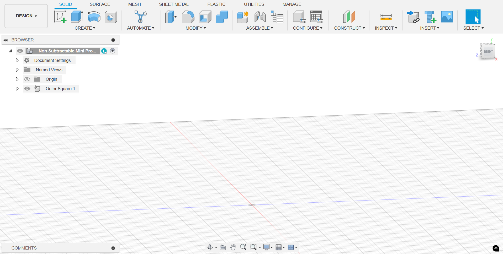
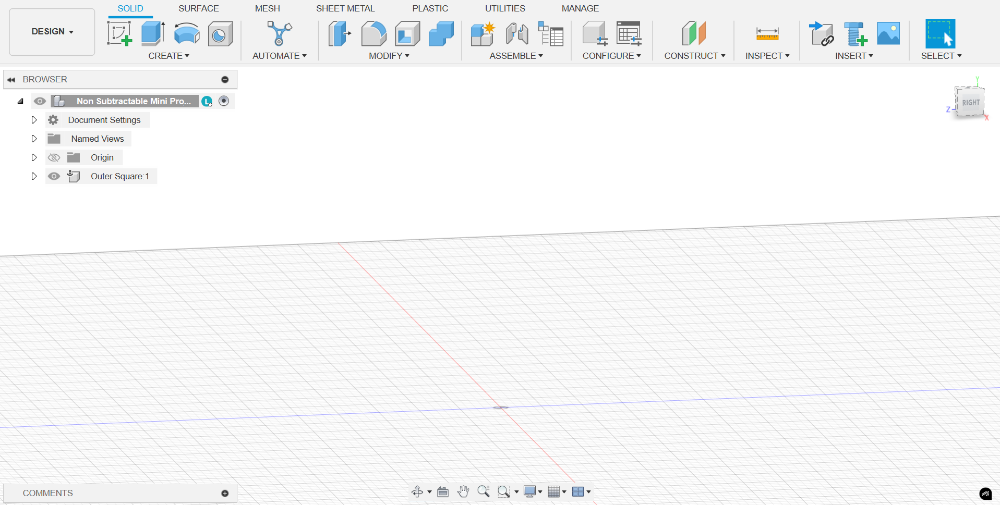

I opened up Fusion 360, and started on a blank canvas. Save the file under the Non-Subtractable 3D Model.
Make a giant cube 3x3x3 inches.
Go to the center of the cube and make another cube 2x2 inches and cut into the cube and hollow it out.
Make a circle with a diameter of .50 inches in the center of the inner part of the cube and extrude it by (I don't remember the height).
Make a square on top of the circle and make it 1.505x1.505 and extrude it by 1.60.
Extrude it by 1.60 (Visual from last step).
Make the same circle with the same extrusion and diameter on the top end of the inner square.
Make a square of 1.20x1.40 and extrude past the inner square.

Make a square of 1.20x1.40 and extrude past the inner square.
This would be where the image would be of the 3D model would be but I don't have a photo, I was not able to get the print.
I decided to 3D Scan my glasses with Scaniverse!